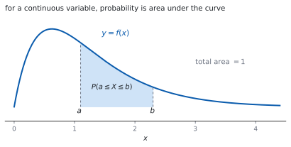
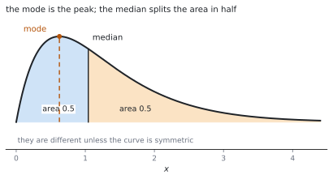

HL 4.14b — Continuous random variables and probability density functions（連続確率変数と確率密度関数）
- 確率密度関数（probability density function）の \(2\) つの条件を言える。
- \(\displaystyle\int_{-\infty}^{\infty} f(x)\,\mathrm{d}x = 1\) から、未知の定数を求められる。
- 確率を面積（定積分）として計算できる。
- 区分的に定義された（piecewise）密度関数を扱える。
- 最頻値（mode）と中央値（median）を求められる。
- \(E(X)\)、\(\mathrm{Var}(X)\)、\(\sigma\) を積分で求められる。
The idea
1. From discrete to continuous（離散から連続へ）
離散確率変数では、値ごとに確率がありました（SL 4.7）。連続確率変数では、値が切れ目なく続きます。
身長のような量では、「ちょうど \(170.000\ldots\) cm」の確率は \(0\) です。意味があるのは「\(169\) cm から \(171\) cm の間」のような区間の確率だけです。
そこで、棒グラフの代わりに曲線を使い、確率を面積で表します。

2. Probability density functions（確率密度関数）
シラバスは、こう書いています。
Continuous random variables and their probability density functions.
\(\displaystyle\int_{-\infty}^{\infty} f(x)\mathrm{d}x = 1\) including piecewise functions.
\[ \int_{-\infty}^{\infty} f(x)\,\mathrm{d}x = 1 \tag{1}\]
条件は \(2\) つです。
- どこでも \(f(x) \geq 0\)（面積が負になっては困ります）。
- 全部の面積が \(1\)（式 1）。
\(f(x)\) は「密度」であって、確率ではありません。\(1\) より大きくなってもかまいません。
たとえば \(f(x) = 2\) を \(0 \leq x \leq 0.5\) で考えると、面積は \(1\) で立派な密度関数です。確率になるのは面積のほうだけです（第 2 節）。
3. Probabilities are areas（確率は面積）
\[ P(a \leq X \leq b) = \int_{a}^{b} f(x)\,\mathrm{d}x \tag{2}\]
\(1\) 点の確率は \(0\) です。幅が \(0\) の区間の面積は \(0\) だからです。
\[ P(X = a) = \int_{a}^{a} f(x)\,\mathrm{d}x = 0 \tag{3}\]
ですから、\(P(X \leq a)\) と \(P(X < a)\) は同じ値です。離散のときとちがうところです。
4. Piecewise functions（区分的に定義された関数）
密度関数は、区間ごとにちがう式で与えられることがあります。シラバスも including piecewise functions と書いています。
\[ f(x) = \begin{cases} x & 0 \leq x \leq 1 \\ 2-x & 1 < x \leq 2 \\ 0 & \text{それ以外} \end{cases} \]
積分も区間ごとに分けて、足します。 「それ以外は \(0\)」の部分は面積が \(0\) なので、計算に入れる必要はありません。
5. The mode（最頻値）
シラバスは、こう定義しています。
For a continuous random variable, a value at which the probability density function has a maximum value is called a mode
\(f(x)\) がいちばん大きくなる \(x\) が最頻値です。求め方は \(2\) 通りです。
- なめらかなら、\(f'(x) = 0\) を解いて最大を調べる。
- 区間の端が最大のこともあるので、端の値も見る。
\(f\) が区間の中で単調なら、最頻値は端になります。
6. The median（中央値）
シラバスは、こう書いています。
and for the median: \(\displaystyle\int_{-\infty}^{m} f(x)\mathrm{d}x = \frac{1}{2}\).
\[ \int_{-\infty}^{m} f(x)\,\mathrm{d}x = \frac{1}{2} \tag{4}\]
面積をちょうど半分に分ける値です。

\(f\) が区間 \([p,\ q]\) の外で \(0\) なら、下端は \(p\) から始めれば十分です。\(m\) についての方程式を解くことになります。
7. Mean, variance and standard deviation（平均・分散・標準偏差）
公式集の 4.14 の欄にあります。
Expected value of a continuous random variable X
\[ E(X) = \mu = \int_{-\infty}^{\infty} x\,f(x)\,\mathrm{d}x \tag{5}\]
Variance of a continuous random variable X
\[ \mathrm{Var}(X) = \int_{-\infty}^{\infty} (x-\mu)^{2} f(x)\,\mathrm{d}x = \int_{-\infty}^{\infty} x^{2} f(x)\,\mathrm{d}x-\mu^{2} \tag{6}\]
離散のときと、形がそっくりです。\(\sum\) が \(\int\) に、\(P(X = x)\) が \(f(x)\,\mathrm{d}x\) に変わっただけです（HL 4.14a）。
\(\sigma = \sqrt{\mathrm{Var}(X)}\) も、\(E(aX+b) = aE(X)+b\)、\(\mathrm{Var}(aX+b) = a^{2}\mathrm{Var}(X)\) も、そのまま使えます。
TI-Nspire CX II の計算画面で、テンプレート（ctrl + shift + B の \(\int\)）に区間と式を入れると、定積分がそのまま出ます。
中央値のような方程式は、menu → 3: Algebra → 1: Solve に \(\int\) を入れたまま渡せます。RAD になっているかを見てください。
最頻値は、グラフをかいて menu → 6: Analyze Graph → 3: Maximum で読めます。
答案には、式を書いてください。 式 4 や 式 5 の形を書いてから値を入れます。
Paper 1 では使えません。 このページの例題と演習は、すべて手で解けるようにしてあります。
Why it works
なぜ、確率が面積になるのか
区間 \([x,\ x+h]\) の確率を考えます。\(h\) が小さければ、その区間の確率はおよそ
\[ P(x \leq X \leq x+h) \approx f(x)\,h \]
です。細い長方形の面積です。これをつなげて足すと、区分求積の形になります。
\(h \to 0\) の極限が定積分です（SL 5.5）。ですから確率は、曲線の下の面積になります。
全部の確率を足すと \(1\) という決まりが、式 1 にあたります。
なぜ、\(f(x)\) が \(1\) を超えてよいのか
\(f(x)\) は「確率そのもの」ではなく、確率の密度です。上の式を見ると
\[ f(x) \approx \frac{P(x \leq X \leq x+h)}{h} \]
で、確率を幅で割ったものです。幅が小さければ、割った値はいくらでも大きくなれます。
単位で考えると分かりやすいです。長さを測る変数なら、\(f(x)\) の単位は「\(1\) cm あたりの確率」です。\(1\) cm あたり \(2\) でも、\(0.5\) cm 分なら確率は \(1\) です。
なぜ、\(1\) 点の確率が \(0\) なのか
式 3 のとおり、幅が \(0\) なら面積も \(0\) です。
「起こらない」という意味ではありません。どれか \(1\) つの値はかならず出ますが、前もってその \(1\) 点を当てる確率が \(0\) だ、ということです。
このため、\(\leq\) と \(<\) の区別が消えます。離散のときは区別が必要でしたから、ここは注意してください。
なぜ、離散と同じ形の式になるのか
離散では \(E(X) = \sum x\,P(X = x)\) でした（HL 4.14a）。
連続では、細い区間 \([x,\ x+h]\) の確率が \(f(x)h\) なので、\(\sum x\,f(x)h\) を考えます。\(h \to 0\) とすると
\[ \sum x\,f(x)\,h \ \longrightarrow \ \int x\,f(x)\,\mathrm{d}x \]
です。\(\sum\) が \(\int\) に、\(P(X = x)\) が \(f(x)\mathrm{d}x\) に変わっただけです。
分散も同じで、式 6 の \(2\) つの形が等しいことは、離散のときとまったく同じ計算で示せます。
Worked examples
問題文は英語です。意味が理解できなかったら、問題文の下の「日本語訳」を開いてください。解説は日本語です。
例題も演習も、すべて電卓なしで解けます。 Paper 1 のつもりで解いてください。
例題 1 The continuous random variable \(X\) has probability density function \(f(x) = kx\) for \(0 \leq x \leq 2\), and \(f(x) = 0\) otherwise.
(a) Find \(k\).
(b) Find \(P(X \leq 1)\).
日本語訳
連続確率変数 \(X\) の確率密度関数が、\(0 \leq x \leq 2\) で \(f(x) = kx\)、それ以外で \(f(x) = 0\) です。
(a) \(k\) を求めなさい。
(b) \(P(X \leq 1)\) を求めなさい。
(a) 全部の面積が \(1\) です（式 1）。\(f\) は \([0,\ 2]\) の外で \(0\) なので、そこだけ積分します。
\[ \int_{0}^{2} kx\,\mathrm{d}x = \left[\frac{kx^{2}}{2}\right]_{0}^{2} = 2k = 1, \qquad k = \frac{1}{2} \]
(b) 式 2 です。
\[ P(X \leq 1) = \int_{0}^{1} \frac{x}{2}\,\mathrm{d}x = \left[\frac{x^{2}}{4}\right]_{0}^{1} = \frac{1}{4} \]
検算。 三角形の面積で見ます。 底辺 \(2\)、高さ \(f(2) = 1\) なので面積は \(1\) ✓
検算（(b) の大きさ）。 左半分は右半分より密度が小さいので、\(\dfrac{1}{4} < \dfrac{1}{2}\) ✓ 大小が合っています。
(a) \(\displaystyle\int_{0}^{2} kx\,\mathrm{d}x = 2k = 1\), so \(k = \dfrac{1}{2}\)
(b) \(P(X \leq 1) = \displaystyle\int_{0}^{1} \frac{x}{2}\,\mathrm{d}x = \left[\frac{x^{2}}{4}\right]_{0}^{1} = \frac{1}{4}\)
例題 2 The continuous random variable \(X\) has probability density function \(f(x) = \dfrac{3}{8}x^{2}\) for \(0 \leq x \leq 2\), and \(0\) otherwise.
(a) Find \(E(X)\) and \(\mathrm{Var}(X)\).
(b) Find the median of \(X\).
(c) Write down the mode of \(X\).
日本語訳
連続確率変数 \(X\) の確率密度関数が、\(0 \leq x \leq 2\) で \(f(x) = \dfrac{3}{8}x^{2}\)、それ以外で \(0\) です。
(a) \(E(X)\) と \(\mathrm{Var}(X)\) を求めなさい。
(b) \(X\) の中央値を求めなさい。
(c) \(X\) の最頻値を書きなさい。
\[ E(X) = \int_{0}^{2} x\cdot\frac{3}{8}x^{2}\,\mathrm{d}x = \frac{3}{8}\left[\frac{x^{4}}{4}\right]_{0}^{2} = \frac{3}{8}\cdot 4 = \frac{3}{2} \]
\[ E(X^{2}) = \int_{0}^{2} x^{2}\cdot\frac{3}{8}x^{2}\,\mathrm{d}x = \frac{3}{8}\left[\frac{x^{5}}{5}\right]_{0}^{2} = \frac{3}{8}\cdot\frac{32}{5} = \frac{12}{5} \]
\[ \mathrm{Var}(X) = \frac{12}{5}-\left(\frac{3}{2}\right)^{2} = \frac{48-45}{20} = \frac{3}{20} \]
(b) 式 4 を解きます。
\[ \int_{0}^{m} \frac{3}{8}x^{2}\,\mathrm{d}x = \left[\frac{x^{3}}{8}\right]_{0}^{m} = \frac{m^{3}}{8} = \frac{1}{2} \]
\[ m^{3} = 4, \qquad m = \sqrt[3]{4} \]
(c) \(f\) は \([0,\ 2]\) で増え続けるので、最大は右端です。最頻値は \(2\) です。
検算。 全体の面積を見ます。 \(\dfrac{3}{8}\cdot\dfrac{8}{3} = 1\) ✓
検算（中央値の位置）。 \(\sqrt[3]{4} \approx 1.59\) で、\(0\) と \(2\) の間、しかも平均 \(1.5\) より右 ✓ 右に重みのある形と合います。
(a) \(E(X) = \dfrac{3}{8}\left[\dfrac{x^{4}}{4}\right]_{0}^{2} = \dfrac{3}{2}\), \(\ E(X^{2}) = \dfrac{3}{8}\left[\dfrac{x^{5}}{5}\right]_{0}^{2} = \dfrac{12}{5}\)
\(\mathrm{Var}(X) = \dfrac{12}{5}-\dfrac{9}{4} = \dfrac{3}{20}\)
(b) \(\dfrac{m^{3}}{8} = \dfrac{1}{2}\), so \(m = \sqrt[3]{4}\)
(c) The mode is \(2\).
例題 3 The continuous random variable \(X\) has probability density function
\[ f(x) = \begin{cases} x & 0 \leq x \leq 1 \\ 2-x & 1 < x \leq 2 \\ 0 & \text{otherwise} \end{cases} \]
(a) Verify that \(f\) is a probability density function.
(b) Find \(E(X)\).
(c) Write down the mode and the median.
日本語訳
連続確率変数 \(X\) の確率密度関数が上のとおりです。
(a) \(f\) が確率密度関数であることを確かめなさい。
(b) \(E(X)\) を求めなさい。
(c) 最頻値と中央値を書きなさい。
(a) どちらの区間でも \(f(x) \geq 0\) です。面積を区間ごとに足します。
\[ \int_{0}^{1} x\,\mathrm{d}x+\int_{1}^{2} (2-x)\,\mathrm{d}x = \frac{1}{2}+\left[2x-\frac{x^{2}}{2}\right]_{1}^{2} = \frac{1}{2}+\left(2-\frac{3}{2}\right) = 1 \]
(b) こちらも区間ごとです。
\[ \int_{0}^{1} x\cdot x\,\mathrm{d}x = \left[\frac{x^{3}}{3}\right]_{0}^{1} = \frac{1}{3} \]
\[ \int_{1}^{2} x(2-x)\,\mathrm{d}x = \left[x^{2}-\frac{x^{3}}{3}\right]_{1}^{2} = \frac{4}{3}-\frac{2}{3} = \frac{2}{3} \]
\[ E(X) = \frac{1}{3}+\frac{2}{3} = 1 \]
(c) グラフは \(x = 1\) を頂点とする三角形です。最頻値は \(1\)。左右対称なので、中央値も \(1\) です。
検算。 三角形の面積で見ます。 底辺 \(2\)、高さ \(1\) なので \(\dfrac{1}{2}\cdot 2\cdot 1 = 1\) ✓
検算（対称性）。 \(x = 1\) について左右対称なので、平均も \(1\) ✓ 計算と合いました。
(a) \(f(x) \geq 0\) and \(\displaystyle\int_{0}^{1} x\,\mathrm{d}x+\int_{1}^{2}(2-x)\,\mathrm{d}x = \frac{1}{2}+\frac{1}{2} = 1\)
(b) \(E(X) = \dfrac{1}{3}+\dfrac{2}{3} = 1\)
(c) The mode is \(1\) and the median is \(1\).
例題 4 The continuous random variable \(X\) has probability density function \(f(x) = k\left(4-x^{2}\right)\) for \(0 \leq x \leq 2\), and \(0\) otherwise.
(a) Find \(k\).
(b) Find \(E(X)\) and \(\mathrm{Var}(X)\).
(c) Write down the mode of \(X\).
日本語訳
連続確率変数 \(X\) の確率密度関数が、\(0 \leq x \leq 2\) で \(f(x) = k\left(4-x^{2}\right)\)、それ以外で \(0\) です。
(a) \(k\) を求めなさい。
(b) \(E(X)\) と \(\mathrm{Var}(X)\) を求めなさい。
(c) \(X\) の最頻値を書きなさい。
(a)
\[ \int_{0}^{2} \left(4-x^{2}\right)\mathrm{d}x = \left[4x-\frac{x^{3}}{3}\right]_{0}^{2} = 8-\frac{8}{3} = \frac{16}{3} \]
\[ k\cdot\frac{16}{3} = 1, \qquad k = \frac{3}{16} \]
(b)
\[ E(X) = \frac{3}{16}\int_{0}^{2} \left(4x-x^{3}\right)\mathrm{d}x = \frac{3}{16}\left[2x^{2}-\frac{x^{4}}{4}\right]_{0}^{2} = \frac{3}{16}(8-4) = \frac{3}{4} \]
\[ E(X^{2}) = \frac{3}{16}\int_{0}^{2} \left(4x^{2}-x^{4}\right)\mathrm{d}x = \frac{3}{16}\left[\frac{4x^{3}}{3}-\frac{x^{5}}{5}\right]_{0}^{2} = \frac{3}{16}\cdot\frac{64}{15} = \frac{4}{5} \]
\[ \mathrm{Var}(X) = \frac{4}{5}-\left(\frac{3}{4}\right)^{2} = \frac{64-45}{80} = \frac{19}{80} \]
(c) \(4-x^{2}\) は \([0,\ 2]\) で減り続けるので、最大は左端です。最頻値は \(0\) です。
検算。 \(\dfrac{32}{3}-\dfrac{32}{5} = \dfrac{160-96}{15} = \dfrac{64}{15}\) ✓ 通分が合っています。
検算（平均の位置）。 \(\dfrac{3}{4}\) は \(0\) と \(2\) の間で、左寄り ✓ 密度が左に厚い形と合います。
(a) \(\displaystyle\int_{0}^{2}\left(4-x^{2}\right)\mathrm{d}x = \frac{16}{3}\), so \(k = \dfrac{3}{16}\)
(b) \(E(X) = \dfrac{3}{16}(8-4) = \dfrac{3}{4}\), \(\ E(X^{2}) = \dfrac{3}{16}\cdot\dfrac{64}{15} = \dfrac{4}{5}\)
\(\mathrm{Var}(X) = \dfrac{4}{5}-\dfrac{9}{16} = \dfrac{19}{80}\)
(c) The mode is \(0\).
試験ではこう書く
For \(f\) to be a probability density function its total area must be \(1\). Since \(f\) is zero outside \([0,\ 2]\),
\[\int_{0}^{2} k\left(4-x^{2}\right)\mathrm{d}x = k\left[4x-\frac{x^{3}}{3}\right]_{0}^{2} = k\left(8-\frac{8}{3}\right) = \frac{16k}{3} = 1\]
so \(k = \dfrac{3}{16}\). Note that \(4-x^{2} \geq 0\) on this interval, so \(f(x) \geq 0\) as required.
The mean is \(E(X) = \displaystyle\int_{0}^{2} x f(x)\,\mathrm{d}x = \frac{3}{16}\left[2x^{2}-\frac{x^{4}}{4}\right]_{0}^{2} = \frac{3}{16}(8-4) = \frac{3}{4}\), and
\[E(X^{2}) = \frac{3}{16}\left[\frac{4x^{3}}{3}-\frac{x^{5}}{5}\right]_{0}^{2} = \frac{3}{16}\left(\frac{32}{3}-\frac{32}{5}\right) = \frac{3}{16}\cdot\frac{64}{15} = \frac{4}{5}\]
so \(\mathrm{Var}(X) = E(X^{2})-\left[E(X)\right]^{2} = \dfrac{4}{5}-\dfrac{9}{16} = \dfrac{19}{80}\).
Finally, \(f\) is decreasing on \([0,\ 2]\), since \(4-x^{2}\) decreases there. The maximum value of the density is therefore at the left endpoint, so the mode is \(0\). A turning point is not needed here: the largest value of a density can occur at an endpoint of its interval.
Common errors
\(f(x)\) は密度で、\(1\) を超えることがあります（第 2 節）。
確率になるのは面積だけです。\(f(0.5) = 2\) と書いてあっても、まちがいではありません。
連続では \(P(X = a) = 0\) です（式 3）。
\(f(a)\) は「そこでの密度」であって、確率ではありません。\(\leq\) と \(<\) の区別も消えます。
式が変わるところで、積分を切ります（第 4 節）。
\(0\) の部分は足しても \(0\) なので省けますが、\(2\) つの式にまたがる区間を \(1\) 本で書くことはできません。
中央値は面積を半分にする値、最頻値は密度が最大になる値です（図 2）。
左右対称な形でなければ、\(2\) つは一致しません。
\(f'(x) = 0\) の解がなくても、最頻値はあります（第 5 節）。
\(f\) が区間の中で単調なら、最大は端です。グラフの形を思いうかべてから答えてください。
Exercises
各問題に、折りたたみが \(3\) つ付いています。日本語訳、解答例（答案用紙に書くべきこと。英語です）、解説（なぜそうなるか。日本語です）。
まず自分で解いて、次に解答例と見くらべてください。解説は、合わなかったときだけ開けば十分です。
1 The continuous random variable \(X\) has \(f(x) = k\) for \(0 \leq x \leq 4\) and \(0\) otherwise. Find \(k\) and \(P(1 \leq X \leq 3)\).
日本語訳
連続確率変数 \(X\) が、\(0 \leq x \leq 4\) で \(f(x) = k\)、それ以外で \(0\) です。\(k\) と \(P(1 \leq X \leq 3)\) を求めなさい。
\[\int_{0}^{4} k\,\mathrm{d}x = 4k = 1, \qquad k = \frac{1}{4}\]
\[P(1 \leq X \leq 3) = \int_{1}^{3} \frac{1}{4}\,\mathrm{d}x = \frac{2}{4} = \frac{1}{2}\]
長方形なので、積分しなくても面積で分かります（第 3 節）。幅 \(4\)、高さ \(k\) で面積 \(1\) です。
これを一様分布（uniform distribution）といいます。
検算。 幅 \(2\) の区間なので、全体 \(4\) のうちの半分 ✓
検算（どこでも同じ）。 \(P(0 \leq X \leq 2)\) も \(\dfrac{1}{2}\) ✓ 密度が一定だからです。
2 The continuous random variable \(X\) has \(f(x) = kx^{2}\) for \(0 \leq x \leq 3\) and \(0\) otherwise. Find \(k\).
日本語訳
連続確率変数 \(X\) が、\(0 \leq x \leq 3\) で \(f(x) = kx^{2}\)、それ以外で \(0\) です。\(k\) を求めなさい。
\[\int_{0}^{3} kx^{2}\,\mathrm{d}x = k\left[\frac{x^{3}}{3}\right]_{0}^{3} = 9k = 1, \qquad k = \frac{1}{9}\]
式 1 に入れて、\(k\) について解くだけです。
検算。 \(\dfrac{1}{9}\cdot 9 = 1\) ✓
検算（\(f \geq 0\)）。 \(\dfrac{x^{2}}{9} \geq 0\) ✓ もう \(1\) つの条件も満たしています。
3 For the density \(f(x) = \dfrac{1}{9}x^{2}\) on \(0 \leq x \leq 3\), find \(P(X \leq 2)\).
日本語訳
\(0 \leq x \leq 3\) における密度 \(f(x) = \dfrac{1}{9}x^{2}\) について、\(P(X \leq 2)\) を求めなさい。
\[P(X \leq 2) = \int_{0}^{2} \frac{x^{2}}{9}\,\mathrm{d}x = \left[\frac{x^{3}}{27}\right]_{0}^{2} = \frac{8}{27}\]
下端は \(0\) からで十分です。\(x < 0\) では密度が \(0\) だからです。
\(P(X \leq 2)\) と \(P(X < 2)\) は同じ値です（第 3 節）。
検算（大きさ）。 \(\dfrac{8}{27} < \dfrac{1}{2}\) ✓ 密度が右に厚いので、左側は半分未満です。
検算（残り）。 \(P(X > 2) = \dfrac{19}{27}\) で、足すと \(1\) ✓
4 The continuous random variable \(X\) has \(f(x) = 3x^{2}\) for \(0 \leq x \leq 1\) and \(0\) otherwise. Find \(E(X)\).
日本語訳
連続確率変数 \(X\) が、\(0 \leq x \leq 1\) で \(f(x) = 3x^{2}\)、それ以外で \(0\) です。\(E(X)\) を求めなさい。
\[E(X) = \int_{0}^{1} 3x^{3}\,\mathrm{d}x = \left[\frac{3x^{4}}{4}\right]_{0}^{1} = \frac{3}{4}\]
\(x\) をかけてから積分します（式 5）。\(x \cdot 3x^{2} = 3x^{3}\) です。
検算（範囲）。 \(\dfrac{3}{4}\) は \(0\) と \(1\) の間 ✓
検算（位置）。 密度が右に厚いので、平均は真ん中の \(0.5\) より右 ✓
検算（全面積）。 \(\displaystyle\int_{0}^{1} 3x^{2}\,\mathrm{d}x = 1\) ✓ たしかに密度関数です。
5 For the density \(f(x) = 3x^{2}\) on \(0 \leq x \leq 1\), find the median of \(X\).
日本語訳
\(0 \leq x \leq 1\) における密度 \(f(x) = 3x^{2}\) について、\(X\) の中央値を求めなさい。
\[\int_{0}^{m} 3x^{2}\,\mathrm{d}x = m^{3} = \frac{1}{2}\]
\[m = \frac{1}{\sqrt[3]{2}}\]
式 4 を解きます。積分が \(m^{3}\) になるので、\(3\) 乗根です。
検算（大きさ）。 \(\dfrac{1}{\sqrt[3]{2}} \approx 0.794\) で、\(0\) と \(1\) の間 ✓
検算（平均と比べて）。 平均 \(\dfrac{3}{4} = 0.75\) より少し右 ✓ 密度が右に厚い形と合います。
6 The continuous random variable \(X\) has \(f(x) = \dfrac{1}{2}x\) for \(0 \leq x \leq 2\) and \(0\) otherwise. Find \(E(X)\) and \(\mathrm{Var}(X)\).
日本語訳
連続確率変数 \(X\) が、\(0 \leq x \leq 2\) で \(f(x) = \dfrac{1}{2}x\)、それ以外で \(0\) です。\(E(X)\) と \(\mathrm{Var}(X)\) を求めなさい。
\[E(X) = \int_{0}^{2} \frac{x^{2}}{2}\,\mathrm{d}x = \left[\frac{x^{3}}{6}\right]_{0}^{2} = \frac{4}{3}\]
\[E(X^{2}) = \int_{0}^{2} \frac{x^{3}}{2}\,\mathrm{d}x = \left[\frac{x^{4}}{8}\right]_{0}^{2} = 2\]
\[\mathrm{Var}(X) = 2-\left(\frac{4}{3}\right)^{2} = 2-\frac{16}{9} = \frac{2}{9}\]
\(E(X^{2})\) では \(x^{2}\) をかけます。\(x^{2}\cdot\dfrac{x}{2} = \dfrac{x^{3}}{2}\) です。
\(\mu^{2}\) を引くのを忘れないこと（式 6）。
検算（符号）。 \(2 > \dfrac{16}{9} \approx 1.78\) なので分散は正 ✓
検算（範囲）。 \(\dfrac{4}{3} \approx 1.33\) は \(0\) と \(2\) の間で、右寄り ✓
7 The continuous random variable \(X\) has \(f(x) = 6x(1-x)\) for \(0 \leq x \leq 1\) and \(0\) otherwise. Find the mode of \(X\).
日本語訳
連続確率変数 \(X\) が、\(0 \leq x \leq 1\) で \(f(x) = 6x(1-x)\)、それ以外で \(0\) です。\(X\) の最頻値を求めなさい。
\[f(x) = 6x-6x^{2}, \qquad f'(x) = 6-12x\]
\[f'(x) = 0 \ \Rightarrow \ x = \frac{1}{2}\]
Since \(f''(x) = -12 < 0\), this is a maximum, so the mode is \(\dfrac{1}{2}\).
最頻値は、密度が最大になる \(x\) です（第 5 節）。微分して \(0\) とおきます。
この形は上に凸な放物線なので、頂点が最大です。端の値 \(f(0) = f(1) = 0\) より大きいことも見ておきます。
検算（全面積）。 \(\displaystyle\int_{0}^{1} \left(6x-6x^{2}\right)\mathrm{d}x = 3-2 = 1\) ✓
検算（対称性）。 \(x = \dfrac{1}{2}\) について左右対称なので、平均も中央値も \(\dfrac{1}{2}\) ✓
8 Show that, for any continuous random variable with probability density function \(f\), the probability \(P(X = a)\) is zero for every value \(a\).
日本語訳
確率密度関数 \(f\) をもつ任意の連続確率変数について、どの値 \(a\) についても \(P(X = a) = 0\) であることを示しなさい。
Probabilities for a continuous variable are areas: \(P(u \leq X \leq v) = \displaystyle\int_{u}^{v} f(x)\,\mathrm{d}x\).
Taking \(u = v = a\) gives \(P(X = a) = \displaystyle\int_{a}^{a} f(x)\,\mathrm{d}x = 0\), since an integral over an interval of zero width is zero.
Hence no single value carries any probability.
幅が \(0\) なら面積も \(0\)、というだけです（式 3）。
「起こらない」という意味ではありません。どれか \(1\) つの値はかならず出ます（第 3 節）。
検算（区間を縮める）。 \(f(x) = \dfrac{1}{2}\) 上 \([0,\ 2]\) で、\(P(1 \leq X \leq 1+h) = \dfrac{h}{2}\) ✓ \(h \to 0\) で \(0\) です。
検算（\(\leq\) と \(<\)）。 どちらも同じ値になります ✓ 端の \(1\) 点の確率が \(0\) だからです。
試験ではこう書く
For a continuous random variable, probability is defined as area under the density curve: for any \(u \leq v\),
\[P(u \leq X \leq v) = \int_{u}^{v} f(x)\,\mathrm{d}x\]
Setting \(u = v = a\) gives an integral whose two limits are equal. Such an integral is zero for every integrable function, because the interval of integration has zero width. Hence
\[P(X = a) = \int_{a}^{a} f(x)\,\mathrm{d}x = 0\]
for every value \(a\), whatever the density function is.
This does not mean that the outcomes are impossible: one value does occur each time the experiment is performed. It means that no single value has positive probability, and it is why \(P(X \leq a)\) and \(P(X < a)\) are equal for a continuous variable, whereas for a discrete variable they can differ.
9 Explain why a probability density function may take values greater than \(1\), although a probability never can.
日本語訳
確率が \(1\) を超えないのに、確率密度関数の値が \(1\) を超えてもよいのはなぜかを説明しなさい。
The value \(f(x)\) is a density, not a probability: it is a probability per unit of \(x\).
A probability is an area, given by \(f(x)\) multiplied by a width, so a large value of \(f\) over a small width still gives an area of at most \(1\).
For example \(f(x) = 2\) on \(0 \leq x \leq \dfrac{1}{2}\) has total area \(1\) and is a valid density.
「\(1\) 単位あたりの確率」だと思うのが近道です（第 2 節）。
制限がかかるのは面積のほうで、高さには制限がありません。せまい区間に確率が集まると、高さは大きくなります。
検算（例）。 \(f(x) = 2\) 上 \(\left[0,\ \dfrac{1}{2}\right]\) の面積は \(2 \times \dfrac{1}{2} = 1\) ✓
検算（もっと高く）。 \(f(x) = 10\) 上 \(\left[0,\ \dfrac{1}{10}\right]\) でも面積は \(1\) ✓ 高さはいくらでも大きくできます。
試験ではこう書く
A probability density function does not give probabilities directly. Its value \(f(x)\) is a density: approximately, for a small width \(h\),
\[P(x \leq X \leq x+h) \approx f(x)\,h\]
so \(f(x)\) is a probability divided by a width, that is, a probability per unit of \(x\). Dividing by a small number can produce a large result, so there is no upper bound on \(f\).
What is bounded is area. Every probability is an area under the curve, and the total area is \(1\), so no area can exceed \(1\). A tall density is allowed provided it is tall only over a short interval.
For example, \(f(x) = 2\) for \(0 \leq x \leq \dfrac{1}{2}\) and \(0\) elsewhere is a perfectly good density: it is never negative and its total area is \(2 \times \dfrac{1}{2} = 1\), even though its value is twice the largest possible probability.
10 A student says that the median of a continuous random variable is the value at which the density function is largest. Identify the error and state the correct condition for the median.
日本語訳
ある生徒が「連続確率変数の中央値は、密度関数が最大になる値だ」と言いました。まちがいを指摘し、中央値の正しい条件を述べなさい。
The value at which the density is largest is the mode, not the median.
The median \(m\) is defined by \(\displaystyle\int_{-\infty}^{m} f(x)\,\mathrm{d}x = \frac{1}{2}\), so it divides the total area into two equal halves.
The two agree only when the density is symmetric about that value.
最頻値と中央値を取りちがえただけです（図 2）。
「頂上」と「面積の半分」はちがう場所です。裾が片側に長いと、中央値は裾のほうへ寄ります。
検算（ずれる例）。 \(f(x) = \dfrac{3}{8}x^{2}\) 上 \([0,\ 2]\) では、最頻値が \(2\)、中央値は \(2\) より小さい ✓
検算（一致する例）。 \(f(x) = 6x(1-x)\) 上 \([0,\ 1]\) は対称なので、どちらも \(\dfrac{1}{2}\) ✓
試験ではこう書く
The description given is that of the mode, not the median. The mode of a continuous random variable is a value at which the density function attains its maximum, which is where the curve is highest.
The median \(m\) is defined by the area condition
\[\int_{-\infty}^{m} f(x)\,\mathrm{d}x = \frac{1}{2}\]
so it is the value that divides the total area of \(1\) into two equal halves. It is found by solving an equation in \(m\), not by differentiating.
The two measures answer different questions: the mode asks where the density is greatest, the median asks where half the probability lies to each side. They coincide when the density is symmetric about a single peak, but not in general. For a density that rises steadily on an interval, the mode is at the right endpoint while the median lies strictly inside the interval.